Color Map Utilities¶
Matplotlib provides numerous built-in colormaps and an excellent tutorial on Choosing Colormaps. Familiarity with these built-in color maps is suggested. The sequential built-in maps are particularly useful for 3D surface visualizations.
Choosing colormaps for surfaces in 3D has the additional requirement of enhancing the geometric visualization along with defining functional values. S3Dlib provides mulitple easy-to-use methods for creating custom colormaps which are particularly applicable for displaying 3D surfaces. These methods are particularly useful when transparent and mirrored colormaps are needed for clear visualizations of 3D surfaces, or simply for a more graphic display. All colormaps returned using these functions are derived from matplotlib.colors.Colormap. These functions are available in the module:
import S3Dlib.cmap_utilities as cmu
In the following discusssion, example colormaps are provided to illustrate the usage of the S3Dlib methods. The colormap graphs were generated using the script provided in the Mathplotlib Choosing Colormaps tutorial, with modifications to display the example colormaps.
RGB Linear Gradient¶
Simple color maps, linear in RGB space, are created using the function
rgb_cmap_gradient(lowColor,highColor,name,mirrored)
which returns an instance of a registered matplotlib.colors.Colormap with name if provided. The color arguments are in Matplotlib Colors format. The colormap monotonically increases from the lowColor to the highColor in RGB color space. The mirrored argument is a boolean and if set True, the color map is mirrored with the highcolor at the center. Mirrored colormaps are particularly useful for non-orientable surfaces.
Several examples using this function are:
cmaps['RGB Gradient'] = [
'rgbDefault', 'mpDefault',
'RdToGn', 'YWToBu', 'cardboard', 'cardboardMrrd',
'bnShade', 'WtToBk', 'BkToWtMrrd', 'WtToBkMrrd' ]
cmu.rgb_cmap_gradient( name='rgbDefault')
cmu.rgb_cmap_gradient( 'black', [0.122, 0.467, 0.706], 'mpDefault' )
cmu.rgb_cmap_gradient( 'red', 'green', 'RdToGn' )
cmu.rgb_cmap_gradient( 'yellow', 'blue', 'YWToBu' )
cmu.rgb_cmap_gradient( [0.25,0.15,0], [1,.9,.75], 'cardboard' )
cmu.rgb_cmap_gradient( [0.25,0.15,0], [1,.9,.75], 'cardboardMrrd', mirrored=True )
cmu.rgb_cmap_gradient( [0.25,0.15,0], 'white', 'bnShade' )
cmu.rgb_cmap_gradient( 'white', 'black', 'WtToBk' )
cmu.rgb_cmap_gradient( 'black', 'white', 'BkToWtMrrd', mirrored=True )
cmu.rgb_cmap_gradient( 'white', 'black', 'WtToBkMrrd', mirrored=True )
Note that the colormap named ‘rgbDefault’ is the default colormap if no arguments are provided.
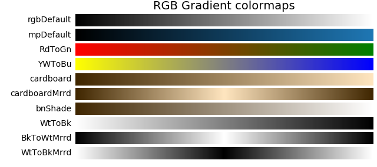HSV Linear Gradient¶
Simple color maps, linear in HSV space, are created using the function
hsv_cmap_gradient(lowColorArg,highColorArg,name,mirrored)
which returns an instance of a registered matplotlib.colors.Colormap with name, if provided. The lowColorArg and highColorArg are HSV or HSVA (hue, saturation, value, alpha) arrays of float values. The float values for SVA range in [0,1].
The float values for hue range in [0,2], which is not the standard range for hue. This was defined in this manner to allow for direction in the cyclic definition of hue. This hue mapping from 0 to 2 is shown below.
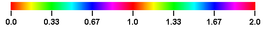For example, consider a color map going from green (low) to blue (high). Specifying green and blue as 0.33 and 0.67, the map will pass through cyan. However, specifying green as 1.33, the map will pass through yellow, red and magenta. The colormap still monotonically increases from the lowColor to the highColor in HSV space. The mirrored argument is applied in the same manner as previously described for the RGB gradient color maps.
Hue¶
The following are examples of varying the cyclic hue value of the color arguments in both the forward and backward directions. In these examples, the saturation and value for the low and high color arguments were held constant at 1.
cmaps['Hue Gradient'] = [
'hsvDefault',
'hsvRdToGn', 'hsvRdFromGn', 'hsvYwToBu','hsvYwFromBu',
'RdToRd', 'RdFromRd', 'RdToRdMrrd', 'RdFromRdMrrd',
'BlToBl', 'BlFromBl', 'BlToBlMrrd', 'BlFromBlMrrd' ]
cmu.hsv_cmap_gradient( name='hsvDefault')
cmu.hsv_cmap_gradient( [0,1,1], [0.333,1,1], 'hsvRdToGn' )
cmu.hsv_cmap_gradient( [1,1,1], [0.333,1,1], 'hsvRdFromGn' )
cmu.hsv_cmap_gradient( [0.166,1,1], [0.666,1,1], 'hsvYwToBu' )
cmu.hsv_cmap_gradient( [1.166,1,1], [0.666,1,1], 'hsvYwFromBu' )
cmu.hsv_cmap_gradient( [0,1,1], [1,1,1], 'RdToRd' )
cmu.hsv_cmap_gradient( [1,1,1], [0,1,1], 'RdFromRd' )
cmu.hsv_cmap_gradient( [0,1,1], [1,1,1],'RdToRdMrrd', mirrored=True )
cmu.hsv_cmap_gradient( [1,1,1], [0,1,1],'RdFromRdMrrd', mirrored=True )
cmu.hsv_cmap_gradient( [0.666,1,1], [1.666,1,1], 'BlToBl' )
cmu.hsv_cmap_gradient( [1.666,1,1], [0.666,1,1], 'BlFromBl' )
cmu.hsv_cmap_gradient( [0.666,1,1], [1.666,1,1], 'BlToBlMrrd', mirrored=True )
cmu.hsv_cmap_gradient( [1.666,1,1], [0.666,1,1], 'BlFromBlMrrd', mirrored=True )
Note that the colormap named ‘hsvDefault’ is the default colormap if no arguments are provided. This colormap is equivalent to the Matplotlib built-in colormap named ‘hsv’.
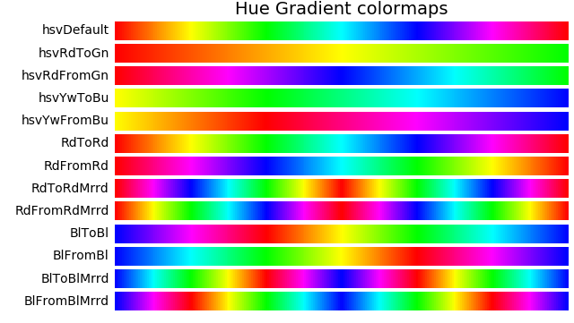The effect of reversing the order of the low and high color arguments is most notable by comparing the maps ‘RdToRd’ versus ‘RdFromRd’. Both start and end with red. Also, the difference between using RGB and HSV is seen by comparing the yellow to blue colormaps in these two color spaces, ‘YwToBu’ versus ‘hsvYwToBu’.
Saturation and Value¶
In these examples, the hue was constant at 0 (red). The first four colormaps vary value [0,1] while holding saturation to 1. The second set vary saturation [0,1] and hold value constant at 1.
cmaps['Saturation and Value Gradient'] = [
'RdToBk', 'BkFromRd', 'RdToBkMrrd', 'BkFromRdMrrd',
'RdToWt', 'WtFromRd', 'RdToWtMrrd', 'WtFromRdMrrd' ]
cmu.hsv_cmap_gradient( [0,1,1], [0,1,0], 'RdToBk' )
cmu.hsv_cmap_gradient( [0,1,0], [0,1,1], 'BkFromRd' )
cmu.hsv_cmap_gradient( [0,1,1], [0,1,0], 'RdToBkMrrd', mirrored=True )
cmu.hsv_cmap_gradient( [0,1,0], [0,1,1], 'BkFromRdMrrd', mirrored=True )
cmu.hsv_cmap_gradient( [0,1,1], [0,0,1], 'RdToWt' )
cmu.hsv_cmap_gradient( [0,0,1], [0,1,1], 'WtFromRd' )
cmu.hsv_cmap_gradient( [0,1,1], [0,0,1], 'RdToWtMrrd', mirrored=True )
cmu.hsv_cmap_gradient( [0,0,1], [0,1,1], 'WtFromRdMrrd', mirrored=True )
Cyclic and Named Colors¶
Since the hue is cyclic, any same hue can be represented by a number plus an integer value. For example, blue hue is 0.67, 1.67, 2.66, 3.67, etc. This results in the ability to produce repeated color maps by representing the low and high arguments with values greater than 2.
Also, the arguments can be strings of named Matplotlib colors. See for example named colors. To shift the named color hues above 1, the color string is prefixed with a ‘+’ character. This provides the method of reversing the direction of the hue while still using named color values.
Examples using cyclic and named color for HSV color maps are:
cmaps['Cyclic and Named Color'] = [
'red3', 'blue2R', 'goldteal', 'plgrnOrchR',
'pgrdkcy', 'hpnktrq', 'pgrdkcy_RGB', 'hpnktrq_RGB' ]
cmu.hsv_cmap_gradient( [0,1,1], [3,1,1], 'red3' )
cmu.hsv_cmap_gradient( [2.666,1,1], [0.666,1,1], 'blue2R' )
cmu.hsv_cmap_gradient( 'gold','teal', 'goldteal' )
cmu.hsv_cmap_gradient( '+palegreen','orchid', 'plgrnOrchR' )
cmu.hsv_cmap_gradient( 'palegoldenrod','darkcyan', 'pgrdkcy' )
cmu.hsv_cmap_gradient( 'hotpink','turquoise', 'hpnktrq' )
cmu.rgb_cmap_gradient( 'palegoldenrod','darkcyan', 'pgrdkcy_RGB' )
cmu.rgb_cmap_gradient( 'hotpink','turquoise', 'hpnktrq_RGB' )
This produces the following colormaps.
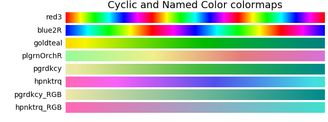In the above, the last two colormaps use the RGB gradient method as a comparison to the map produced by the HSV gradient method which precedes them. This exemplifies the effect of a reduction in saturation and value while linearly moving through RGB space.
Hue HSV Modifications¶
While varying hue in HSV color space, there is an apparent ‘sharpness’ or rapid change in apparent color at yellow, cyan, and magenta. This is seen in ‘hsv’ colormap shown below.
This perceptual change is also reflected in the rapid change in CIELAB color space represented by lightness, L*. (A more detailed discussion of this is in Choosing Colors in Matplotlib ).
To smooth-out this sharpness in the HSV colormap, the following method is available:
hue_cmap(smooth, lowHue, highHue, name)
Which returns a colormap of constant value and saturation of 1. The smooth parameter is the degree of smoothing at yellow, cyan and magenta, with a value of 1 for no smoothing. For values greater than one, hues around yellow, cyan and magenta are expanded, reducing the extent of red, green and blue hues. For values less than one, the opposite occurs. The smooth value range is [0.1,10]. The default value is 1.6. The parameters lowHue and highHue are similary defined for the hue as given in the previous sections. When color names are used for this parameter, only the hue value of the color is used.
Example colormaps using this method are given below.
cmaps['Hue HSV'] = [
'hue_05', 'hsvDefault', 'HUEdefault','hue_80',
'hueYwToYw8', 'hueYwToBu8', 'hueYwFromBu8', 'hueYwFromBu5' ]
cmu.hue_cmap(0.5,name='hue_05' )
cmu.hue_cmap( name='HUEdefault' )
cmu.hue_cmap(8.0,name='hue_80')
cmu.hue_cmap(0.5,name='hue_05' )
cmu.hue_cmap(8.0, 0.166, name='hueYwToYw8')
cmu.hue_cmap(8.0,'y', 'b', 'hueYwToBu8')
cmu.hue_cmap(8.0,'+y','b', 'hueYwFromBu8')
cmu.hue_cmap(0.5,'+y','b', 'hueYwFromBu5')
The effect of lightness, L*, on smoothing is shown in the grayscale maps below, for the first four colormaps.
A qualitative description of smoothing by examining the L* numerical values is shown in the plot below. The effect of smoothing is dramatically illustrated in this plot showing the peaks, valleys and plateaus of the lightness curves at CMY (0.167, 0.5, 0.833) and RGB (0.0, 0.33, 0.67).
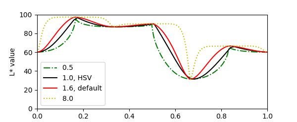The script for producing the above plot is given below.
import numpy as np
import matplotlib.pyplot as plt
from matplotlib import cm
from matplotlib.colors import ListedColormap
from colorspacious import cspace_converter
import s3dlib.cmap_utilities as cmu
def Lstar(cmap) :
''' x,y arrays for ploting L* of a colormap.'''
if isinstance(cmap,str) : cmap = cm.get_cmap(cmap)
N = 256
if isinstance(cmap,ListedColormap) : N = len(cmap.colors)
rgb = cmap(range(N))[:,0:3]
lab = cspace_converter("sRGB1", "CAM02-UCS")(rgb)
L = np.transpose(lab)[0]
x = np.linspace(0, 1, N)
return x,L
# ...................................................
vhsv, Lhsv = Lstar('hsv')
vdflt, Ldflt = Lstar(cmu.hue_cmap())
v_80, L_80 = Lstar(cmu.hue_cmap(8))
v_05, L_05 = Lstar(cmu.hue_cmap(.5))
fig = plt.figure(figsize=(6,2.5))
ax = fig.add_subplot(1,1,1)
ax.set(xlim=(0,1), ylim=(0,100))
ax.set_ylabel('L* value')
ax.plot(v_05,L_05, label='0.5 ', color='g', linestyle='-.')
ax.plot(vhsv, Lhsv, label='1.0, HSV', color='k')
ax.plot(vdflt, Ldflt, label='1.6, default', color='r')
ax.plot(v_80,L_80, label='8.0 ', color='y', linestyle=':')
ax.legend()
plt.show()
The effect of smoothing out an HSV colormap when applied to a surface is shown in the simple surface plot below.
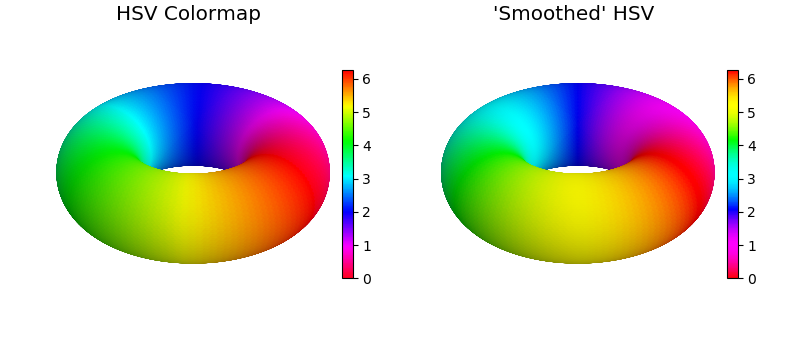Smooth HSV¶
The ‘smooth’ parameter is also available when using the hsv_cmap_gradient method. This effect is most apparent when creating colormaps between the RGB colors. The regular and smooth colormaps are shown as a comparison.
cmaps['Smoothed HSV'] = [
'RG', 'RG_s', 'GB','GB_s',
'BR', 'BR_s']
cmu.hsv_cmap_gradient( [0,1,1], [0.333,1,.65], 'RG' )
cmu.hsv_cmap_gradient( [0,1,1], [0.333,1,.65], 'RG_s', smooth=1.6 )
cmu.hsv_cmap_gradient( [.333,1,.34], [0.666,1,1], 'GB' )
cmu.hsv_cmap_gradient( [.333,1,.34], [0.666,1,1], 'GB_s', smooth=1.4 )
cmu.hsv_cmap_gradient( [0.666,1,1], [1,1,.52], 'BR' )
cmu.hsv_cmap_gradient( [0.666,1,1], [1,1,.52], 'BR_s', smooth=1.6 )
In these examples, the red and green values were selected with reduced values to create maps with similar starting and ending L* values, as seen in the following plot.
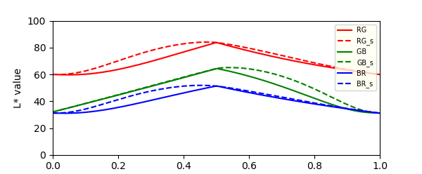Lab Linear Gradient¶
A colormap with a linearly monotonic increasing L* values may be preferable for increased perception when used for illustrating surface geometries. This type of map is also beneficial when surface geometry visualization is needed when printed on black and white printers. The cmap_xtra file provides the Lab_cmap_gradient method to produce colormaps which are linear in Lab space. Consequently, these maps will be linear in L*. Linear Lab colormaps are created using a function from a file and creating the cmap as:
from cmap_xtra import Lab_cmap_gradient
cmap = Lab_cmap_gradient(lowColor, highColor, name, mirrored)
All calling parameters are identical to those used in the rgb_cmap_gradient method.
Note
This function requires the installation of the colorspacious package. All methods referred to in this guide use the cmap_utilities module except this one.
Example generation of colormaps using Lab_cmap_gradient are given below.
cmaps['Lab Gradient'] = [
'magma', 'viridis', 'lab_indg','lab_marn',
'lab_dgrn', 'LabDefault', 'RdToWt' ]
Lab_cmap_gradient('indigo', 'aqua', 'lab_indg')
Lab_cmap_gradient('maroon', 'yellow', 'lab_marn')
Lab_cmap_gradient('darkgreen','lemonchiffon','lab_dgrn')
Lab_cmap_gradient( name='LabDefault')
The resulting colormaps are below. The linear Matplotlib colormaps of ‘magma’ and ‘viridis’ are shown as a comparison to those generated using this function.
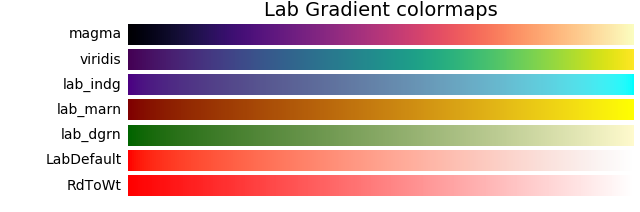Grayscale maps for these colormaps illustrate the perceived lightness values.
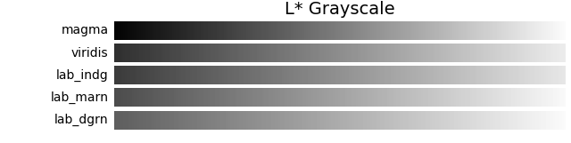The plot below quantitatively demonstrates the linear nature of the colormaps and the relative differences between the maps.
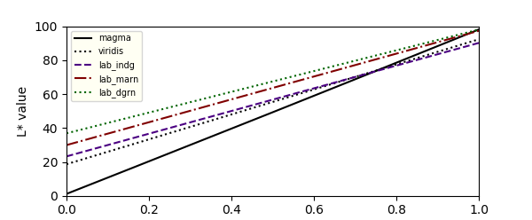The application of a linear Lab colormap to visualize surface geometry is shown below. The addition of shading will enhance the effect, effectively reducing the L* at the lower end of the scale.
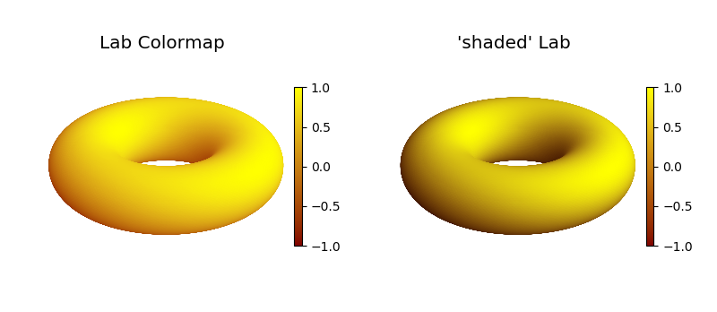Stitch Cmaps¶
Colormaps may be created from concatenated colormaps using
stitch_cmap( *maps, bndry, name)
which returns an instance of a registered matplotlib.colors.Colormap with name, if provided. The bndry argument is a float or a list of float values designating the boundaries between the input maps. Values range from greater than 0 to less than 1. If bndry is None (default), the input maps are evenly spaced.
cmaps['Stitch'] = [
'fWt_2', 'inferno_3', 'RdCy_4',
'Diverging*', 'Cyclic*', 'stchG' ]
cmA = cmu.hsv_cmap_gradient('firebrick','wheat',smooth=1.5)
cmB = cmu.hsv_cmap_gradient('wheat','teal',smooth=1.5)
cmu.stitch_cmap(cmA,cmB,name='fWt_2')
cmu.mirrored_cmap('inferno')
testMap3 = cmu.stitch_cmap('inferno','inferno_m','inferno_r',bndry=[0.2,0.6],name='inferno_3' )
cmu.reversed_cmap('RdToBk')
cmu.hsv_cmap_gradient( [0.5,1,1], [0.5,1,0], 'CyToBk' )
cmu.reversed_cmap('CyToBk')
cmu.stitch_cmap('RdToBk_r', 'RdToBk','CyToBk_r', 'CyToBk',bndry=[0.3,0.5,0.8], name='RdCy_4' )
cmC = Lab_cmap_gradient('olive','paleturquoise')
cmD = Lab_cmap_gradient('paleturquoise','mediumslateblue')
cmu.stitch_cmap(cmC,cmD,name='Diverging*')
cmE,cmF = Lab_cmap_gradient('black','mediumvioletred'), Lab_cmap_gradient('mediumvioletred','white'),
cmG,cmH = Lab_cmap_gradient('white','green'), Lab_cmap_gradient('green','black')
cmu.stitch_cmap(cmE,cmF,cmG,cmH,name='Cyclic*')
cmu.hsv_cmap_gradient( [0,1,.8], [0,0,1], 'redG')
cmu.hsv_cmap_gradient( 'saddlebrown', 'yellow', 'yelG')
cmu.hsv_cmap_gradient( 'darkgreen', 'lime', 'grnG')
cmu.hsv_cmap_gradient( 'darkslategray', 'cyan', 'cynG')
cmu.hsv_cmap_gradient( 'midnightblue', 'deepskyblue', 'bluG')
cmu.hsv_cmap_gradient( [0.833,1,0.1], 'magenta', 'mgnG')
cmu.stitch_cmap( 'mgnG','bluG','cynG', 'grnG','yelG', 'redG', name='stchG' )
This method can be used to construct simple linear tricolor or multi-color colormaps, for example fWt_2. Specific colormap values can be emphasized using this method as seen in the inferno_3 and RdCy_4 examples, (0.2, 0.6) and (0.3,0.8) respectively. Using Lab colormaps, Diverging and Cyclic colormaps can be constructed.
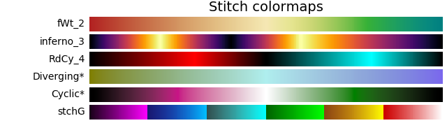RGB Binary¶
Simple two color maps are created using the function
binary_cmap(negColor,posColor,name)
which returns an instance of a registered matplotlib.colors.Colormap with name, if provided. The colormap maps 0 to 0.5 as the negColor and 0.5 1.0 as the posColor. Both color arguments are standard RGBA color formats.
cmaps['Binary'] = [
'binaryDefault', 'binaryRdBu', 'binaryBuYw', 'binaryBuGnLw' ]
cmu.binary_cmap( name='binaryDefault' )
cmu.binary_cmap( [1,0,0], [0,0,1], 'binaryRdBu' )
cmu.binary_cmap( 'blue', 'yellow', 'binaryBuYw' )
cmu.binary_cmap( [0,0,.5], [0,.5,0], 'binaryBuGnLw' )
Mirrored and Reversed¶
Any registered colormap can have the order reversed using
reversed_cmap(cmap)
which returns a new instance of a registered colormap. The returned colormap name is the cmap name with the suffix ‘_rev’.
Any registered colormap can be used to create a mirrored color map using
mirrored_cmap(cmap,rev)
The returned colormap name is the cmap name with the suffix ‘_m’. If the rev argument is True, the returned colormap is also reversed and the name has the suffix ‘_mr’.
cmaps['Mirrored and Reversed'] = [
'viridis', 'plasma', 'magma', 'cividis',
'viridis_r', 'plasma_r', 'magma_r', 'cividis_r',
'viridis_m', 'plasma_m', 'magma_m', 'cividis_m',
'viridis_mr', 'plasma_mr', 'magma_mr', 'cividis_mr' ]
cmu.reversed_cmap('viridis')
cmu.reversed_cmap('plasma')
cmu.reversed_cmap('magma')
cmu.reversed_cmap('cividis')
cmu.mirrored_cmap('viridis')
cmu.mirrored_cmap('plasma')
cmu.mirrored_cmap('magma')
cmu.mirrored_cmap('cividis')
cmu.mirrored_cmap('viridis', rev=True)
cmu.mirrored_cmap('plasma', rev=True)
cmu.mirrored_cmap('magma', rev=True)
cmu.mirrored_cmap('cividis', rev=True)
Transparency¶
Any registered colormap can have the transparency set using
alpha_cmap(cmap,alpha)
where cmap argument is a cmap or a registered colormap name. The argument alpha ranges from 0 to 1 for fully transparent to opaque, respectively. This function will create and return a cmap with a name with suffix ‘_a’. All colors in the map will have the same alpha value.
Tandem Cmaps¶
The gradient and binary cmap functions return a colormap. With these created cmaps, the mirrored, reveresed and transparency cmap functions may be used in sequence to create additional complex cmaps. This method was useful for creating the visualization of Klein Bottle, Spherical to XYZ. In that case, the matplotlib built-in cmap viridis was mirrored and then made transparent.
Miscellaneous¶
Colormap Plot Script¶
The development of custom colormaps should consider the visual, perceptual and applicability to black and white printing. Any created colormaps can be readily analysed and compared to standard colormaps using the following code. Three figures are generated; L* plot, color maps, and grayscale maps. Colormaps to evaluate are set in the highlighted line defined by cmap, an array of colormaps or registered colormap names.
Note
The script includes reference to the cspace_converter object which is located in the colorspacious package.
import numpy as np
import matplotlib.pyplot as plt
from matplotlib import cm
from matplotlib.colors import ListedColormap
import s3dlib.cmap_utilities as cmu
from colorspacious import cspace_converter
# Plot L* ,lightness, for colormaps =================================
cmaps = [ cmu.reversed_cmap('binary'),'viridis', 'plasma', 'inferno', 'magma', 'cividis' ]
# ...................................................................
def Lstar(cmap) :
''' x,y arrays for ploting L* of a colormap.'''
if isinstance(cmap,str) : cmap = cm.get_cmap(cmap)
N = 256
if isinstance(cmap,ListedColormap) : N = len(cmap.colors)
rgb = cmap(range(N))[:,0:3]
lab = cspace_converter("sRGB1", "CAM02-UCS")(rgb)
L = np.transpose(lab)[0]
x = np.linspace(0, 1, N)
return x,L,cmap.name
# Figure 1: x,L* line plot. -----------------------------------------
colors = ['k','r','g','b','y','m','c']
linestyles = ['-', '--', '-.', ':']
fig = plt.figure(figsize=plt.figaspect(0.6))
ax = fig.add_axes([0.1, 0.1, 0.65, 0.85])
ax.set(xlim=(0,1), ylim=(0,100))
ax.set_ylabel('L* value')
Lcol, Lstyles = len(colors), len(linestyles)
for i in range(len(cmaps)) :
linestyle = linestyles[i%Lstyles]
color = colors[i%Lcol]
x,y,name = Lstar(cmaps[i])
ax.plot(x,y, label=name, color=color, linestyle=linestyle)
ax.legend(bbox_to_anchor=(1.02, 1), loc='upper left', borderaxespad=0.)
# Figure 2: Visual L* gray scale. -----------------------------------
numb =len(cmaps)
w, h = 6, numb*0.25
fig, axes = plt.subplots(nrows=numb, figsize=(w,h))
fig.subplots_adjust(top=0.95, bottom=0.01, left=0.2, right=0.99)
if numb==1 : axes = [axes]
for ax in axes :
ax.set_xticks([])
ax.set_yticks([])
for i in range(len(cmaps)):
x,y,name = Lstar(cmaps[i])
grad = np.float32(np.vstack((y, y)))
ax = axes[i]
ax.imshow(grad, aspect='auto', cmap='binary_r', vmin=0., vmax=100.)
pos = list(ax.get_position().bounds)
x_text = pos[0] - 0.01
y_text = pos[1] + pos[3]/2.
fig.text(x_text, y_text, name, va='center', ha='right', fontsize=10)
# Figure 3: Visual color scale. -------------------------------------
numb =len(cmaps)
w, h = 6, numb*0.25
fig, axes = plt.subplots(nrows=numb, figsize=(w,h))
fig.subplots_adjust(top=0.95, bottom=0.01, left=0.2, right=0.99)
if numb==1 : axes = [axes]
for ax in axes :
ax.set_xticks([])
ax.set_yticks([])
grad = np.linspace(0, 1, 256)
grad = np.vstack((grad, grad))
for i in range(len(cmaps)):
ax = axes[i]
cmap=cmaps[i]
if isinstance(cmap,str) : cmap = cm.get_cmap(cmap)
ax.imshow(grad, aspect='auto', cmap=cmap)
pos = list(ax.get_position().bounds)
x_text = pos[0] - 0.01
y_text = pos[1] + pos[3]/2.
fig.text(x_text, y_text, cmap.name, va='center', ha='right', fontsize=10)
# ...................................................................
plt.show()
Named Colors¶
There are numerous available colors in the List of named colors in Matplotlib, sorted by hsv color value. When constructing custom colormaps, comparing colors based on the Lab color values is often convenient. The following table lists the named CSS colors sorted by Lab color.
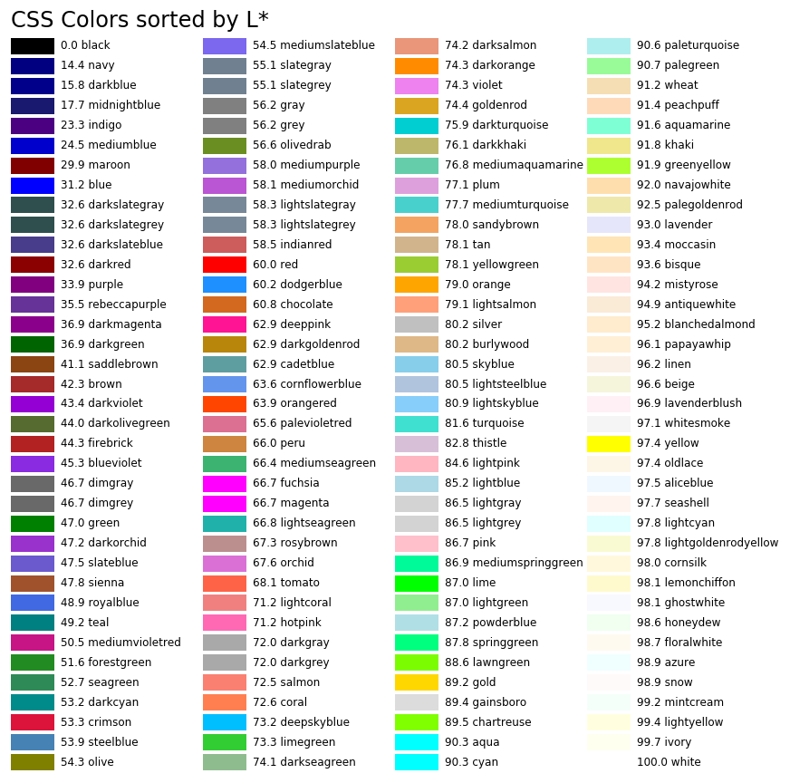